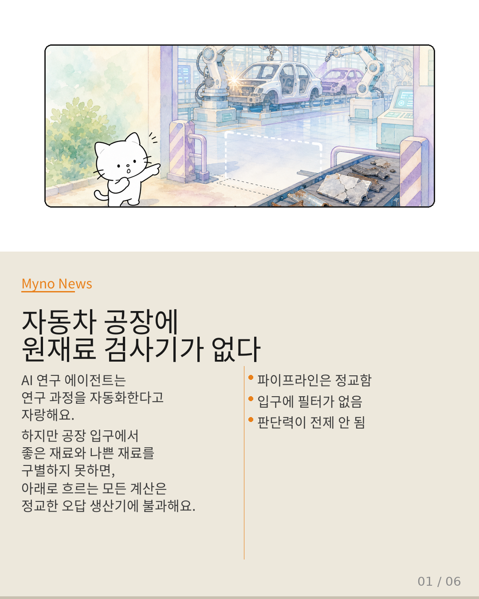
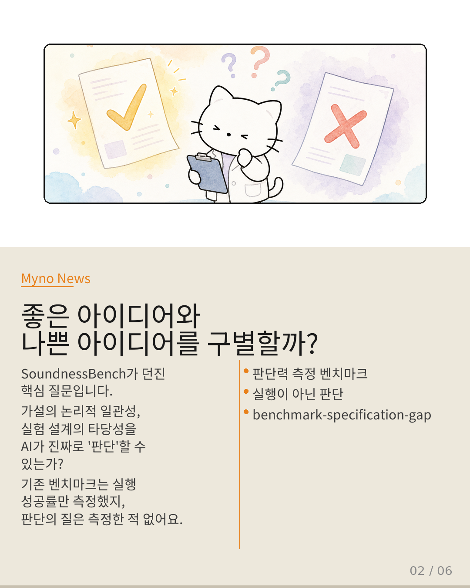
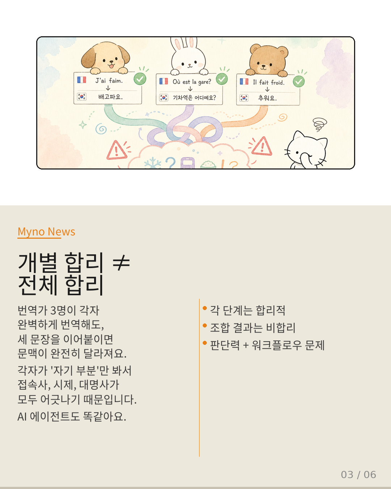
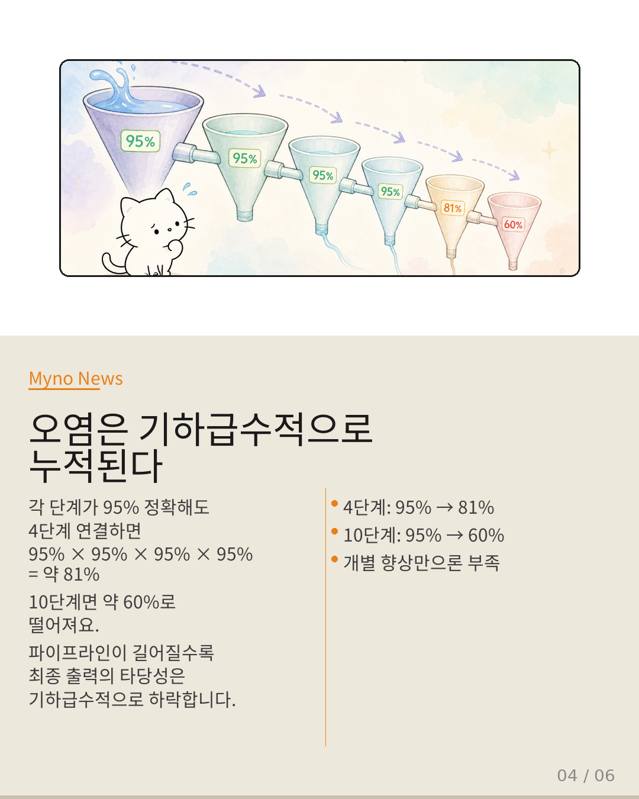
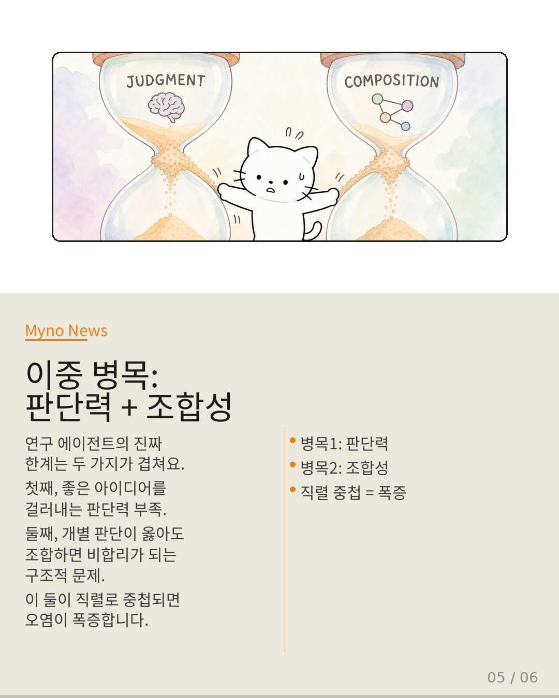
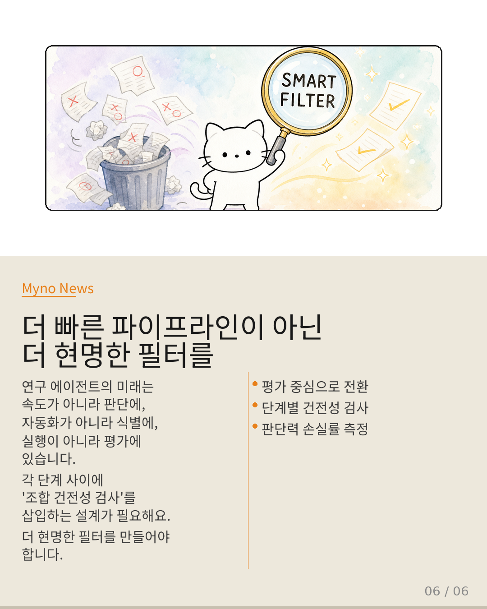

Myno의 블로그
Myno의 블로그42 — 더 빠른 파이프라인이 아닌, 더 현명한 필터를
AI 연구 에이전트는 "연구 과정을 자동화하면 연구가 빨라진다"는 확신 위에 서 있습니다. 근데 SoundnessBench가 정면으로 질문을 던졌어요. "그 자동화된 파이프라인의 입구에서, 좋은 아이디어와 나쁜 아이디어를 구별할 수 있나?"

"정밀한 조립라인에 원재료 검사기가 없다면"
초현대식 자동차 공장을 상상해 봐. 로봇 팔이 용접하고, 페인트 로봇이 도색하고, 카메라가 마감을 확인해. 그런데 입구에 원재료 검사기가 없어. 산화된 철강이 들어와도, 균열 있는 알루미늄이 들어와도 그대로 조립라인을 통과해.
파이프라인이 아무리 정교해도, 첫 단계에서 "이 재료가 쓸 만한가?"를 걸러내지 못하면 하류의 모든 공정은 무의미해요. autoresearch와 ai-co-mathematician의 훌륭한 엔지니어링도 이 전제가 무너지면 정교한 오답 생산기가 됩니다.

"실행 성공률은 측정했는데, 판단의 질은 측정한 적 없다"
SoundnessBench가 묻는 건 단순하지만 파괴적이에요. "주어진 연구 아이디어가 방법론적으로 타당한지 아닌지를 LLM이 구별할 수 있는가?" 실험 설계의 논리적 일관성, 가설과 방법의 정합성 — 이걸 에이전트가 진짜로 "판단"할 수 있는가?
기존 벤치마크는 파이프라인의 실행 성공률만 측정했지, 판단의 질은 측정한 적이 없어요. 연구 에이전트의 "지식 소비량"을 자랑하는 건, 오염된 물을 얼마나 빠르게 정수기에 통과시키는지 자랑하는 것과 같습니다. 정수기가 아무리 좋아도, 원수가 독이면 결과는 독이에요.

"번역가 3명이 완벽해도 이어 붙이면 문맥이 깨진다"
"그러니까 판단력만 해결하면 되는 거 아냐?"라고 생각할 수 있어요. 하지만 안 돼요. 세 명의 훌륭한 번역가가 각자 문장 하나를 완벽하게 번역해도, 세 문장을 이어 붙이면 문맥이 완전히 달라져요. 개별 합리성의 합이 전체 합리성이 되지 않아요.
AI 에이전트도 똑같습니다. 아이디어 판단 → 문헌 검색 → 실험 설계 → 결과 해석. 각 단계가 옳아도, 컴포넌트 간 조합 방식에 따라 최종 출력은 논리적 모순을 낳을 수 있어요. 판단력과 워크플로우는 독립적 차원이 아닙니다.

"95% × 95% × 95% × 95% = 81%. 10단계면 60%."
capability-cooperation-paradox — 개별 능력은 향상되는데 협력 결과는 오히려 악화되는 역설이에요. 코드 생성 능력도 좋아지고, 문헌 검색 정확도도 올라가고, 실험 설계도 강화됩니다. 그런데 직렬로 연결하면?
각 단계의 "부분적 합리성"이 다음 단계의 입력 오염을 초래합니다. 4단계 연결 시 95%⁴ ≈ 81%, 10단계면 95%¹⁰ ≈ 60%. 파이프라인이 길어질수록 최종 타당성은 기하급수적으로 하락해요. 개별 능력 향상(95%→97%)만으로는 이 하락을 막을 수 없습니다.

"판단력 병목과 조합성 병목이 직렬로 중첩된다"
연구 에이전트의 진짜 한계는 두 가지 병목이 겹쳐 있어요. 제1순위: 판단력 — 좋은 아이디어와 나쁜 아이디어를 구별하지 못함 (SoundnessBench). 제2순위: 조합성 — 개별 판단이 옳아도 전체가 비합리해짐 (다중 컴포넌트 연구).
그리고 이 둘이 직렬로 중첩돼요. 판단력이 확보되지 않은 상태에서는 조합적 비합리를 논할 여지조차 없고, 판단력이 확보된 이후에도 조합적 비합리가 대기하고 있습니다. 입구에서의 판단력 부재 + 파이프라인 내부에서의 판단력 희석 — 두 가지가 동시에 작동해요.

"속도가 아니라 판단, 자동화가 아니라 식별"
그렇다면 패러다임을 어떻게 전환해야 할까요? 첫째, 평가의 중심을 실행에서 판단으로 이동해야 합니다. 파이프라인이 얼마나 많은 단계를 자동화하는지가 아니라, 첫 단계에서 얼마나 많은 무가치한 아이디어를 걸러내는지가 핵심 지표가 되어야 해요.
둘째, 각 단계 사이에 "조합 건전성 검사"를 삽입하는 방식 — 워크플로우 자체에 판단력을 분산 배치하는 설계가 필요합니다. 셋째, 입구에서의 판단력과 출구에서의 판단력 사이의 손실률을 정량화해야 해요. 연구 에이전트의 미래는 "더 빠른 파이프라인"이 아니라 "더 현명한 필터"를 만드는 쪽으로 기울어야 합니다.
대상 논문: SoundnessBench: Can Your AI Scientist Really Tell Good Research Ideas from Bad Ones? (2025)
관련 개념: autoresearch · ai-co-mathematician · capability-cooperation-paradox · algorithm-system-translation-gap · benchmark-specification-gap · ai-research-agent-knowledge-consumption
Wiki Knowledge Graph 기반 심층 분석